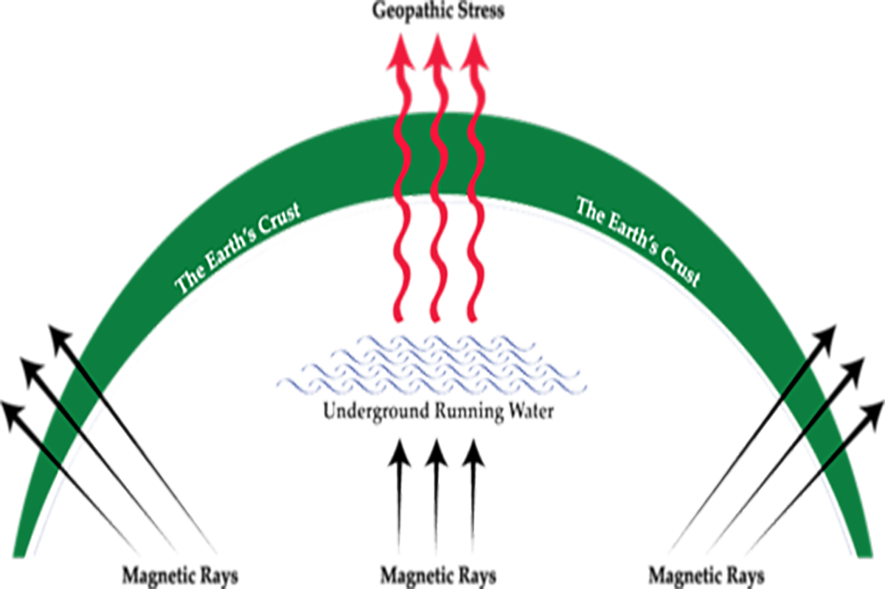

What is Geopathic Stress?
Geopathic Stress refers to the harmful energies emitted by the Earth, which can be natural or man-made. These energies have been discovered to have adverse effects on the health of all living beings. The term "Geopathy" has its roots in the Greek language, where "Geo" means Earth and "Pathos" signifies illness or suffering. This term accurately conveys the essence of the negative impact these energies can have on our well-being.
Geopathic Stress manifests in various ways, negatively affecting both our mental and physical health. It primarily arises from disruptions in the Earth's magnetic field, which can occur naturally or due to human activities. One concerning aspect of Geopathic Energies is their remarkable ability to permeate through objects, disregarding boundaries that we may consider protective. Whether it's floors, walls, or doors, these energies can traverse almost everything in their path.
What Causes Geopathic Stress?
The occurrence of Geopathic Stress can be attributed to a variety of factors, each playing a significant role in its manifestation. One primary factor is the presence of underground streams, water streams, minerals, ore deposits, and tectonic faults. These natural elements can disrupt the Earth's energy field, giving rise to Geopathic Stress. Calamities such as earthquakes and floods also contribute to these disruptions, intensifying their adverse effects.
In addition to natural factors, man-made structures wield substantial influence over the Earth's energy and contribute to Geopathic Stress. Tunnels, high-tension electric lines, sewers, and electromagnetic pollution generated by various sources distort the Earth's natural energy patterns. These disruptions can have far-reaching consequences on the well-being of living organisms in the vicinity.
